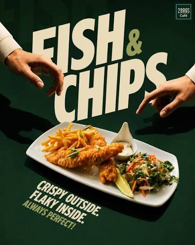
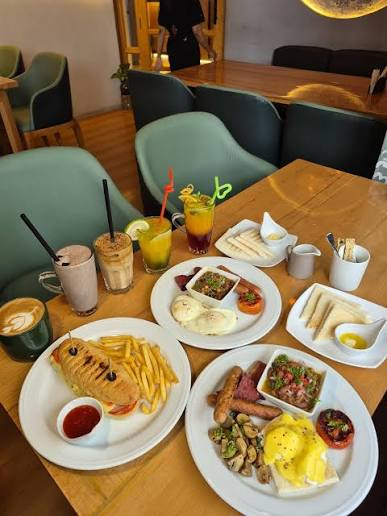
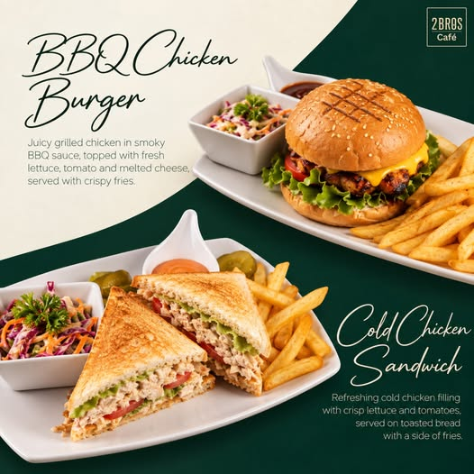
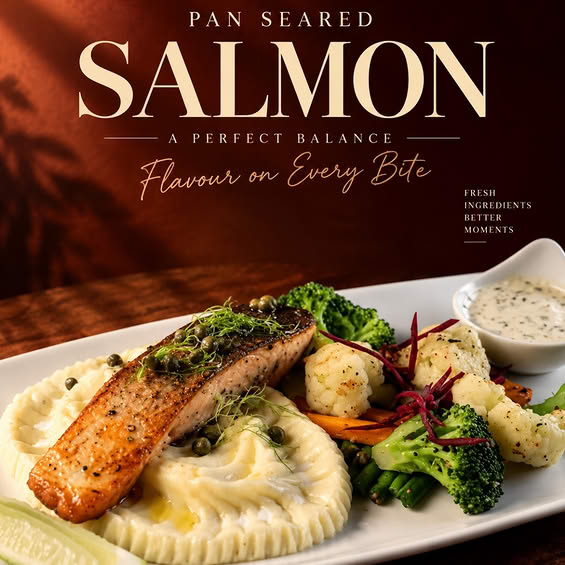
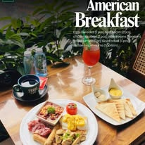

A taste of the cafe
Menu
highlights.
A few dishes, straight from the supplied cafe artwork.

Something for the table
Good things,
on the menu.
The dishes below are named in the supplied promotional artwork. A full itemized menu and current prices were not included with the project materials, so please contact the cafe for the latest details.

BBQ Chicken Burger
Featured in the cafe's supplied menu artwork
Grilled Chicken Sandwich
Featured in the cafe's supplied menu artwork

Crispy Calamari
Featured in the cafe's supplied menu artwork

Pan Seared Salmon
Featured in the cafe's supplied menu artwork

American Breakfast
Featured in the cafe's supplied menu artwork
Need the full menu?
We'd be happy
to help.
For current menu details and pricing, contact 2 Bros Cafe directly.
Call 01841-133022 ↗